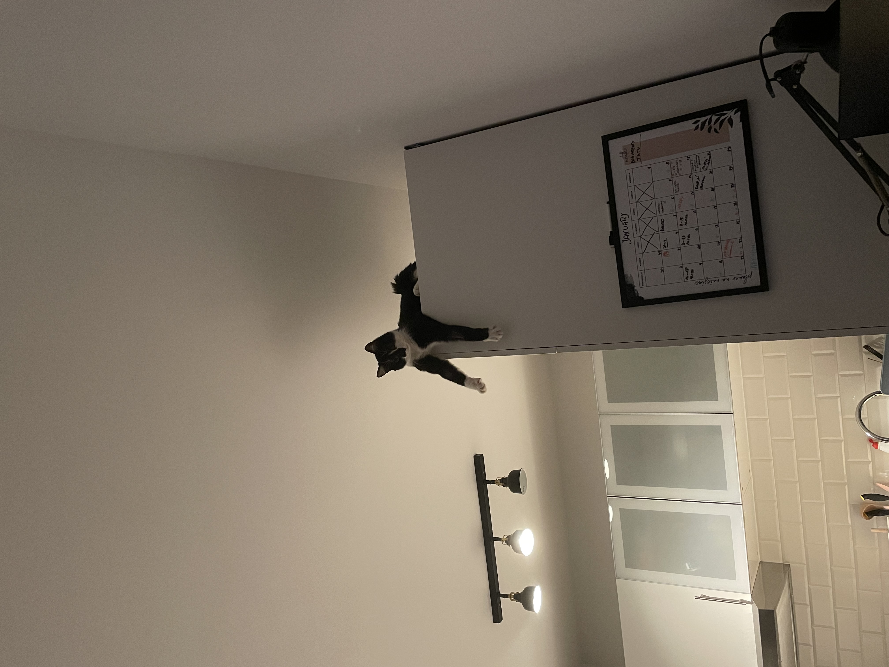

Jest to czarno biały gamoń o imieniu Arbuz.

Codzienne życie z gamoniem
Gamoń wprowadził się do naszego domu, a my mieliśmy nadzieję, że przyniesie nam spokój i słodycz. Cóż, rzeczywistość okazała się zgoła inna. Nasz kochany gamoń ma bowiem swoje własne zasady, a jego ulubione zajęcia to chowanie się w najciemniejszych zakamarkach domu i atakowanie nas znienacka.
Każdy dzień z gamoniem to nowa przygoda, pełna niespodziewanych zwrotów akcji. Odkryliśmy, że jego ulubione miejsce do drzemek zmienia się co kilka dni – od kosza na pranie, przez kanapę, aż po naszą szafę. Nie ma reguły, a my nigdy nie wiemy, gdzie go znajdziemy następnego dnia. Czasem wydaje nam się, że zniknął, po czym okazuje się, że spał zwinięty w kłębek w zupełnie nieoczekiwanym kącie.
Przezwiska Arbuza
Kot nazywa się Arbuz, ale tak naprawdę nikt do niego tak nie mówi. Jako że był to przez długi czas "kiciuś" i wkładał łapki do każdej szklanki wody jaką napotkał, mówimy na niego "Piciuś". Piciuś ma wiele twarzy. Z uwagi że jest to największy gamoń na świecie, będę pisał o nim własnie w ten sposób.
Ulubione zajęcia gamonia
Kiedy nie śpi (a zdarza mu się to rzadko), nasz gamoń uwielbia testować naszą cierpliwość. Skoki na meble, zrzucanie przedmiotów ze stołów i bieganie po ścianach to jego codzienna rutyna. Słodki, tulaśny koteczek? Nic bardziej mylnego!
Nigdy nie przestaje nas zadziwiać swoimi pomysłami. Kiedy wydaje nam się, że znamy już wszystkie jego sztuczki, gamoń znajduje nowy sposób na zaskoczenie nas. Ostatnio zaczął skakać na lodówkę, żeby mieć lepszy widok na kuchnię. Jakby tego było mało, nauczył się otwierać drzwi szafek, co sprawiło, że musieliśmy zainwestować w specjalne blokady. Codzienne życie to nieustanna walka o utrzymanie domu w jednym kawałku.
- 
Gamoń a życie towarzyskie
Zapraszanie znajomych do domu to zawsze wielka niewiadoma. Czy gamoń zaszczyci nas swoją obecnością, czy zdecyduje się terroryzować naszych gości? Zdecydowanie nie jest to kot, który lubi być w centrum uwagi, chyba że sam tego chce.
Niespodziewane momenty słodkości
Choć nasz gamoń słynie z psot i nieprzewidywalnego zachowania, czasem zdarzają się chwile, kiedy pokazuje swoją delikatniejszą stronę. Zdarza się, że w środku nocy przychodzi do łóżka, zwija się w kłębek na poduszce i mruczy tak głośno, że cała sypialnia wibruje. W tych momentach, choć nielicznych, przypomina nam, że mimo wszystko potrafi być słodki i kochany.
Gamoniowe rozterki
Nasz mały gamoń zdaje się żyć w świecie własnych rozterek. Czasem można odnieść wrażenie, że zastanawia się nad sensem życia, wpatrując się w przestrzeń przez długie minuty. A po chwili wraca do rzeczywistości i zaczyna biegać po domu jak szalony. Bywa, że jego zmienność nastrojów jest wręcz zaskakująca.
Słodko-gorzki świat z gamoniem
Mimo że życie z gamoniem jest pełne wyzwań, nie sposób go nie kochać. Jego momenty słodkości, choć ulotne, wynagradzają wszelkie wybryki i niespodzianki, jakie codziennie przynosi. W końcu każdy gamoń ma w sobie coś wyjątkowego, co sprawia, że mimo wszystko nie wyobrażamy sobie domu bez niego.
Zdarza się, że patrzymy na Arbuza i zastanawiamy się, co takiego chodzi mu po głowie. Czy naprawdę rozmyśla nad sensem istnienia, czy może zastanawia się, jak najlepiej zorganizować kolejną psotę? Jego głębokie spojrzenia są pełne tajemnic. Czasem podchodzi do okna i przez długi czas wpatruje się w przestrzeń, jakby zastanawiał się, czy gdzieś tam, za szybą, istnieje inny świat, w którym nie ma zakazów ani nakazów.